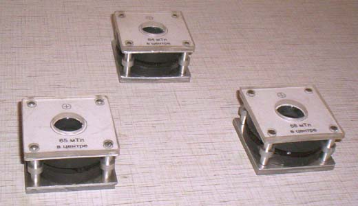
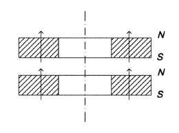
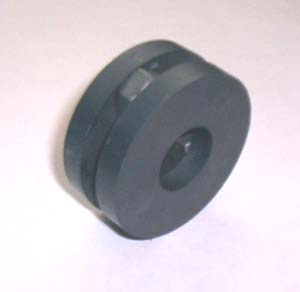
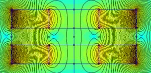
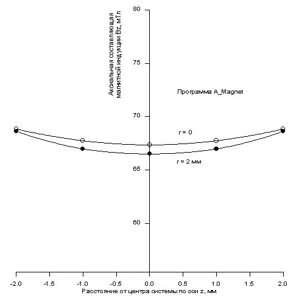
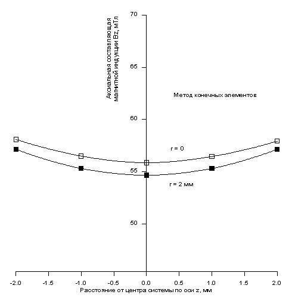
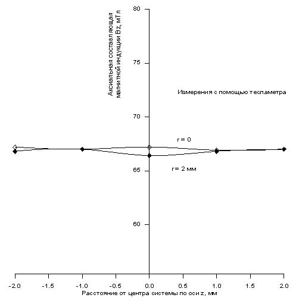
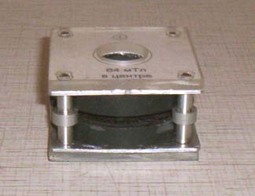

Калибровочная магнитная система из
двух соосно расположенных
кольцевых постоянных магнитов с зоной однородности в центре

В ряде случаев (например, для калибровки датчиков магнитной индукции) требуются системы, создающие однородное магнитное поле в некоторой протяженной зоне (зоне однородности), например, электромагнит [7, 14] или кольца Гельмгольца [12]. Однако для них необходим источник тока заданной величины и, возможно, прибор для измерения индукции магнитного поля [10], что не всегда удобно. Использование постоянных магнитов позволяет создавать калибровочные системы, не требующие источника питания, причем величина магнитного поля этих систем может оставаться стабильной в течение многих лет [9]. Известно деление датчиков магнитной индукции по направлению силовых линий измеряемого поля относительно оси щупа, в который вмонтирован датчик: С- и М- типа (расположение силовых линий измеряемого поля вдоль и поперек оси щупа, соответственно). Желательно иметь магнитную систему, которая позволяла бы иметь доступ к зоне однородности для обоих типов датчиков (кольца Гельмгольца этому требованию удовлетворяют).
Один из пробных вариантов магнитной системы, удовлетворяющей вышеприведенным требованиям, собран по осесимметричной схеме [5] (рис. 1 и 2). Система состоит из двух одинаковых кольцевых постоянных магнитов из феррита бария марки 28БА190 [8] типоразмера К60 х 24 х 9 (внешний диаметр 60 мм, внутренний - 24 мм, высота 9 мм), расположенных соосно на расстоянии 8 мм друг от друга. Направление намагниченности аксиальное (показано на рисунке стрелками), одинаковое для обоих магнитов. Между магнитными кольцами помещены три немагнитные прокладки толщиной 8 мм (немагнитные гайки М10). Кольца склеены с прокладками эпоксидной смолой. В центре системы имеется зона однородного магнитного поля, к которой существует доступ как вдоль оси системы (через отверстия в магнитах), так и в перпендикулярном направлении (через зазор между магнитами). Направление вектора магнитной индукции в этой зоне противоположно направлению намагниченности постоянных магнитов.

Рис. 1. Чертеж магнитной системы в разрезе.

Рис. 2. Внешний вид пробного варианта магнитной системы.
Методом конечных элементов [11] был произведен расчет распределения магнитного поля в системе. Результаты представлены на рис. 3.

Рис. 3. Распределение силовых линий магнитного поля и плотности магнитного потока в магнитной системе.
Расчеты и синтез магнитной системы производились с помощью программы A_Magnet [1] и методом конечных элементов [11]. Программа A_Magnet позволяет рассчитывать индукцию магнитного поля кольцевого постоянного магнита методом эквивалентного соленоида. Магнитное поле системы кольцевых магнитов в соответствии с принципом суперпозиции [6] равно векторной сумме магнитных полей, создаваемых каждым магнитом в отдельности. Для уменьшения трудоемкости расчетов можно использовать программу AM_System [2], которая позволяет сразу рассчитывать индукцию магнитного поля рассматриваемой системы из двух кольцевых постоянных магнитов в произвольной точке пространства. Результаты расчетов аксиальной составляющей магнитной индукции с помощью программы A_Magnet и методом конечных элементов приведены на рис. 4 и 5. При расчетах значение остаточной индукции феррита бария марки 28БА190 принято равным 0.39 Тл, коэрцитивной силы по намагниченности - 190 кА/м [9].

Рис. 4. Аксиальная составляющая магнитной индукции вдоль оси симметрии системы и вдоль оси, расположенной на расстоянии 2 мм от оси симметрии. Расчеты с помощью программы A_Magnet [1].

Рис. 5. Аксиальная составляющая магнитной индукции вдоль оси симметрии системы и вдоль оси, расположенной на расстоянии 2 мм от оси симметрии. Расчеты методом конечных элементов [10].
Из графиков рис. 4 и 5 видно, что в центре системы должна существовать зона однородного магнитного поля (в виде цилиндра диаметром 4 мм и высотой 4 мм), в которой величина неоднородности не превышает 6 %. Если рассматривать зону меньших размеров, то величина неоднородности также уменьшится.
Измерения индукции магнитного поля реальной системы проводились с помощью тесламетра [3] с щупами С- и М- типа на основе датчиков Холла. Результаты измерений, в общем подтверждающие данные расчетов, представлены на рис. 6. Причем величина неоднородности магнитного поля в зоне диаметром 4 мм высотой 4 мм, расположенной в центре системы, реально не превышает 2 %.

Рис. 6. Аксиальная составляющая магнитной индукции вдоль оси симметрии системы и вдоль оси, расположенной на расстоянии 2 мм от оси симметрии. Результаты измерений с помощью тесламетра [3].
Итак, магнитная система вышеприведенной конструкции имеет в центре зону однородного магнитного поля с двухкоординатным доступом и может в некоторых случаях, например, при проверке и калибровке тесламетров с датчиками Холла [9], заменять кольца Гельмгольца [12]. Причем для создания такого же по величине поля в системе катушек Гельмгольца требуется достаточно большой ток, при котором время работы системы ограничено. Изменяя марку и типоразмер постоянных магнитов [8], можно строить аналогичные калибровочные системы с различными размерами зоны однородности и величиной индукции магнитного поля в этой зоне. Расчет таких систем может быть с хорошей степенью точности выполнен с помощью программы A_Magnet [1] или AM_System [2]. На рис. 7 показан рабочий вариант калибровочной магнитной системы, рассчитанной с помощью вышеупомянутых программ.

Рис. 7. Внешний вид рабочего варианта калибровочной магнитной системы из двух соосных кольцевых постоянных феррит-бариевых магнитов типоразмера К60 х 24 х 9. Диаметр проходного отверстия 21 мм, зазор между магнитами 5 мм. Магнитная индукция в центре для разных калибровочных систем порядка 60 мТл.
Для намагничивания кольцевых постоянных магнитов из феррита бария до насыщения использовался малогабаритный электромагнит [7, 14] с блоком питания [4], а также установки импульсного намагничивания [13].
Желающие приобрести калибровочную магнитную систему могут обратиться за дополнительной информацией к автору (см. раздел Контактная информация).
Ссылки:
10.02.2006
22.06.2010
12.02.2018
02.11.2018
Альтернативные источники
энергии
Компьютеры и
Интернет
Магнитные поля
Механотронные системы
Перспективные
разработки
Электроника и
технология